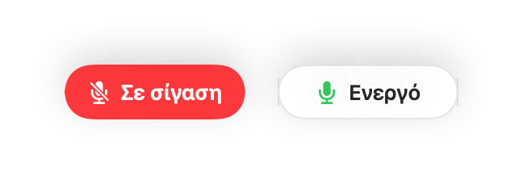
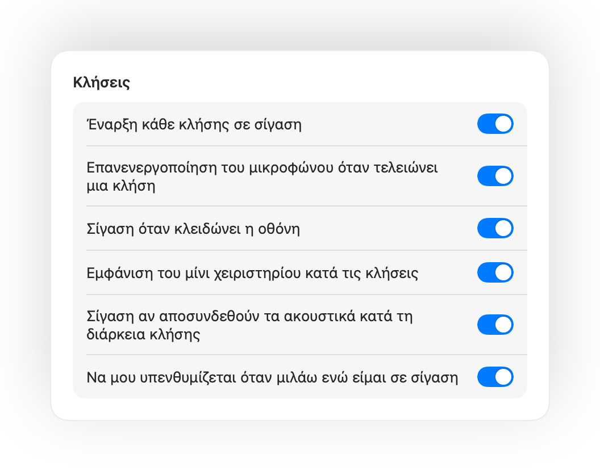
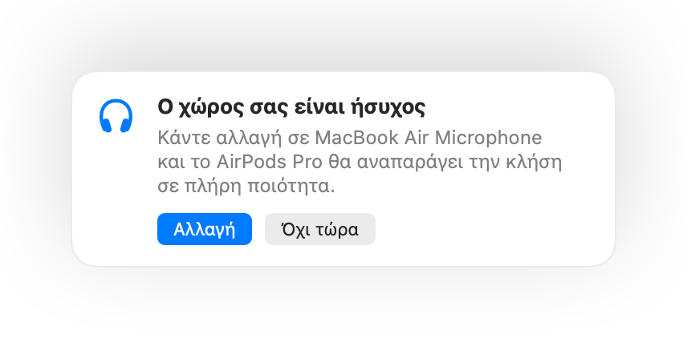

Θέστε το μικρόφωνο του Mac σας σε σίγαση από παντού.
Πατήστε τα AirPods σας ή μια συντόμευση πληκτρολογίου. Το Muffle απενεργοποιεί το ίδιο το μικρόφωνο, ώστε Google Meet, Zoom, Teams, Slack και κάθε άλλη app να ακούν μόνο σιωπή.
Δωρεάν για 3 ημέρες. Μετά, μία πληρωμή, χωρίς συνδρομή. Για macOS 14 Sonoma και νεότερες εκδόσεις.

Λειτουργεί με κάθε app που χρησιμοποιεί το μικρόφωνό σας
- Google Meet
- Zoom
- Microsoft Teams
- Slack
- Discord
- FaceTime
- Webex
- Skype
- SoWork
- Gather
- Chrome
- Safari
- Arc
- Edge
- Firefox
Το Muffle θέτει σε σίγαση το μικρόφωνο σε επίπεδο υλικού, επομένως δεν έχει σημασία ποια app, πρόγραμμα περιήγησης ή καρτέλα το χρησιμοποιεί.
Όλα όσα θα έπρεπε να κάνει το Mac σας σε μια κλήση
Πατήστε τα AirPods σας για σίγαση
Σε κάθε κλήση, πατήστε το στέλεχος μία φορά για σίγαση και ξανά για κατάργηση σίγασης. Λειτουργεί ακόμα και στο Chrome, όπου το Google Meet και άλλες διαδικτυακές κλήσεις αγνοούν το πάτημα των AirPods.
Μια συντόμευση για κάθε app
Ο συνδυασμός Control-Option-M σας θέτει σε σίγαση παντού, ακόμα και όταν η κλήση βρίσκεται σε καρτέλα στο παρασκήνιο. Κρατήστε τον πατημένο για να μιλήσετε όσο είστε σε σίγαση και αφήστε τον για επαναφορά της σίγασης.
Υπενθύμιση «Είστε σε σίγαση»
Αν αρχίσετε να μιλάτε ενώ είστε σε σίγαση, το Muffle σας ειδοποιεί, πριν αναλύσετε ολόκληρη τη σκέψη σας χωρίς να σας ακούει κανείς.
Κλήσεις στον αυτόματο πιλότο
Έναρξη κάθε κλήσης σε σίγαση, επανενεργοποίηση του μικροφώνου όταν τελειώνει μια κλήση και σίγαση όποτε κλειδώνετε το Mac σας.
Γνωρίζετε πάντα αν είστε ενεργοί
Ένα μικρό κινούμενο κουμπί δείχνει την κατάσταση του μικροφώνου κατά τις κλήσεις. Κάντε κλικ σε αυτό για σίγαση ή κατάργηση σίγασης.
Η στάθμη του μικροφώνου μένει σταθερή
Το Chrome, το Zoom και το Teams αλλάζουν τη στάθμη του μικροφώνου από μόνα τους. Κλειδώστε την και το Muffle την επαναφέρει αυτόματα.
Ασφάλεια όταν εξαντλείται η μπαταρία των AirPods
Αν τα ακουστικά αποσυνδεθούν στη μέση μιας κλήσης, το Muffle ενεργοποιεί τη σίγαση πριν η κλήση γυρίσει στο μικρόφωνο του Mac και μεταδώσει όλο τον θόρυβο του δωματίου.
Συντομεύσεις και Κέντρο Ελέγχου
Ενεργοποιήστε τη σίγαση από την εφαρμογή Συντομεύσεις, τη Siri, ένα Stream Deck, το Raycast ή από ένα κουμπί στο Κέντρο Ελέγχου.
Πάτημα για ομιλία ή πάτημα για σίγαση
Επιλέξτε πώς λειτουργεί η συντόμευσή σας: πάτημα για εναλλαγή, κράτημα για ομιλία ή κράτημα για στιγμιαία σίγαση. Προσθέστε ξεχωριστά πλήκτρα σίγασης και κατάργησης σίγασης ή κρατήστε ένα πλήκτρο όπως το Δεξιό ⌥ ή ένα επιπλέον κουμπί ποντικιού.
Πάλι σε σίγαση όταν σταματάτε να μιλάτε
Καταργήσατε τη σίγαση για να πείτε κάτι; Αν παραμείνετε σιωπηλοί για τον χρόνο που επιλέξατε, το Muffle θέτει ξανά σίγαση. Υπολογίζεται μόνο η φωνή σας, όχι η πληκτρολόγηση ή ο θόρυβος περιβάλλοντος.
Το καταλληλότερο μικρόφωνο για τον χώρο
Με AirPods σε έναν ήσυχο χώρο, το Muffle προτείνει το μικρόφωνο του Mac σας, ώστε τα ακουστικά να αναπαράγουν την κλήση σε πλήρη ποιότητα. Όταν υπάρχει θόρυβος, προτείνει το μικρόφωνο των AirPods.
Αδύνατο να μην το προσέξετε
Πράσινη ή κόκκινη λάμψη στα άκρα της οθόνης, έγχρωμο εικονίδιο στη γραμμή μενού, ένα αιωρούμενο κουμπί και ένας ήχος που μπορείτε να απενεργοποιήσετε για κάθε μικρόφωνο. Ενεργοποιήστε όσα προτιμάτε.




Ρύθμιση σε ένα λεπτό
- Εγκαταστήστε το Muffle από το Mac App Store και επιτρέψτε την πρόσβαση στο μικρόφωνο.
- Συνδεθείτε σε μια κλήση σε οποιαδήποτε app, όπως συνήθως.
- Πατήστε τα AirPods σας, πατήστε Control-Option-M ή κάντε κλικ στο εικονίδιο της γραμμής μενού για σίγαση.
Σχεδιασμένο με γνώμονα το απόρρητο
Το Muffle δεν καταγράφει, δεν αποθηκεύει και δεν αποστέλλει ποτέ ήχο. Απλώς ενεργοποιεί και απενεργοποιεί το μικρόφωνό σας και διαβάζει την έντασή του. Χωρίς λογαριασμούς, χωρίς αναλυτικά στοιχεία, χωρίς παρακολούθηση.
Ερωτήσεις
Λειτουργεί το Muffle με το Google Meet στο Chrome;
Ναι. Το Chrome δεν μεταβιβάζει το πάτημα σίγασης των AirPods στις διαδικτυακές κλήσεις, οπότε το Muffle αναλαμβάνει τη λειτουργία και θέτει σε σίγαση το ίδιο το μικρόφωνο. Το ίδιο ισχύει για κάθε κλήση σε καρτέλα περιηγητή.
Θα φαίνομαι σε σίγαση στους άλλους συμμετέχοντες;
Η εφαρμογή της κλήσης μπορεί να συνεχίσει να δείχνει το μικρόφωνό σας ανοιχτό, επειδή το Muffle απενεργοποιεί το ίδιο το μικρόφωνο και όχι το κουμπί της app. Οι άλλοι θα ακούν σιωπή σε κάθε περίπτωση. Το εικονίδιο του Muffle στη γραμμή μενού γίνεται κόκκινο όσο είστε σε σίγαση.
Ποια μοντέλα AirPods υποστηρίζονται;
Τα AirPods Pro, τα AirPods 3 και νεότερα μοντέλα, καθώς και τα AirPods Max, μαζί με μοντέλα Beats που υποστηρίζουν χειριστήρια κλήσης. Η συντόμευση πληκτρολογίου και η γραμμή μενού λειτουργούν με οποιοδήποτε μικρόφωνο.
Λειτουργεί με Zoom, Teams, Slack και Discord;
Ναι. Το Muffle λειτουργεί με κάθε app στο Mac σας που χρησιμοποιεί το μικρόφωνο, τόσο σε εφαρμογές υπολογιστή όσο και σε κλήσεις μέσω περιηγητή.
Υπάρχει συνδρομή;
Όχι. Δοκιμάστε κάθε λειτουργία δωρεάν για 3 ημέρες και μετά ξεκλειδώστε το Muffle με μία μόνο εφάπαξ αγορά.
Γιατί χρειάζεται το Muffle πρόσβαση στο μικρόφωνο;
Το macOS προωθεί το πάτημα των AirPods μόνο σε εφαρμογές που χρησιμοποιούν ενεργά το μικρόφωνο, γι' αυτό το Muffle διατηρεί μια σιωπηλή σύνδεση ανοιχτή κατά τις κλήσεις. Δεν καταγράφεται απολύτως τίποτα.
Τι συμβαίνει αν τερματίσω το Muffle όσο είμαι σε σίγαση;
Το Muffle ενεργοποιεί ξανά το μικρόφωνό σας κατά τον τερματισμό του, ώστε να μην παραμείνετε ποτέ κατά λάθος χωρίς ήχο.
Ποιες εκδόσεις macOS υποστηρίζονται;
macOS 14 Sonoma και νεότερες εκδόσεις. Το κουμπί στο Κέντρο Ελέγχου απαιτεί macOS 26 ή νεότερη έκδοση.
Διαθέτει το Muffle λειτουργία push to talk;
Ναι. Επιλέξτε «Πάτημα για ομιλία» στις Ρυθμίσεις και κρατήστε πατημένη τη συντόμευσή σας για να μιλήσετε. Μπορείτε επίσης να κρατάτε πατημένο ένα μόνο πλήκτρο, όπως το Δεξιό ⌥ ή το fn, ή ένα επιπλέον κουμπί ποντικιού.
Γιατί τα AirPods ακούγονται χειρότερα κατά τις κλήσεις;
Όταν μια κλήση χρησιμοποιεί το μικρόφωνο των AirPods, τα ακουστικά αλλάζουν σε λειτουργία κλήσης, η οποία αναπαράγει ήχο χαμηλότερης ποιότητας. Σε έναν ήσυχο χώρο, το Muffle προτείνει αντί αυτού το μικρόφωνο του Mac σας, ώστε τα AirPods να συνεχίσουν να αναπαράγουν σε πλήρη ποιότητα.
Θα κρατήσει ο θόρυβος περιβάλλοντος το μικρόφωνό μου ενεργό;
Όχι. Το Muffle αναγνωρίζει την ομιλία μέσω της ανάλυσης ήχου στη συσκευή από την Apple, οπότε υπολογίζεται μόνο η ομιλία. Η πληκτρολόγηση, τα κλικ και ο θόρυβος περιβάλλοντος δεν υπολογίζονται, και δεν καταγράφεται τίποτα.
Οδηγοί
- Πώς να κάνετε σίγαση στο Google Meet με AirPods σε MacΤο πάτημα των AirPods δεν κάνει σίγαση στο Google Meet σε Chrome. Δείτε πώς γίνεται η σίγαση μικροφώνου στο Meet με τα AirPods σας ή με συντόμευση.
- Πώς να κάνετε σίγαση στο Zoom με AirPods ή συντόμευση σε MacΚάντε σίγαση στο Zoom σε Mac με τα AirPods ή με μία γενική συντόμευση, ακόμη κι αν το παράθυρο δεν είναι ενεργό. Λειτουργεί στην εφαρμογή και στον περιηγητή.
- Πώς να κάνετε σίγαση στο Microsoft Teams με AirPods σε MacΣίγαση στο Microsoft Teams σε Mac με τα AirPods, γενική συντόμευση ή τη γραμμή μενού. Λειτουργεί στην εφαρμογή Teams και σε κλήσεις στον περιηγητή.
- Πώς να κάνετε σίγαση σε Slack huddle από οποιαδήποτε app σε MacΣίγαση σε Slack huddle στο Mac από οποιαδήποτε app με μία συντόμευση ή τα AirPods σας. Χωρίς να ψάχνετε το παράθυρο της κλήσης.
- Push to talk και γενική συντόμευση σίγασης για το Discord σε MacΜία γενική συντόμευση για push to talk και σίγαση στο Discord στο Mac, ή σίγαση με τα AirPods. Λειτουργεί στην εφαρμογή Discord και στο πρόγραμμα περιήγησης.
- Πώς να κάνετε σίγαση στο Webex από οποιαδήποτε app σε MacΣίγαση σε συναντήσεις Webex στο Mac με μία γενική συντόμευση ή τα AirPods σας, ακόμη και όταν το Webex δεν είναι το ενεργό παράθυρο.
Σύντομες, πρακτικές απαντήσεις για τη σίγαση του μικροφώνου σας σε Mac, σε κάθε app.
Τέρμα το ψάξιμο για το κουμπί της σίγασης.
Δοκιμάστε το Muffle δωρεάν για 3 ημέρες.
Σύντομα στο Mac App Store